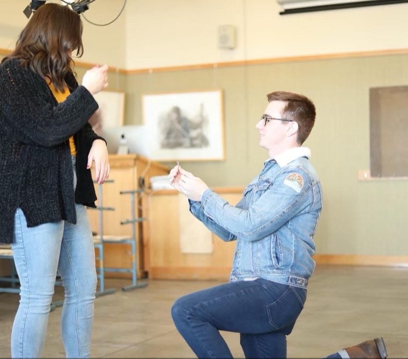

I met Clark last year in April 2021 when he had moved in with some of my friends. When I first met him, he was very quiet and kept to himself. A friend and I invited Clark to do a few things with us and we learned so much more about him. It was during this time that I started to like him. I wanted him to ask me on a date, but he never did so I asked him. We went on a group date with some of my roommates. I really didn’t think we would go on another date, but one week later he asked me out again. We went country dancing on his birthday. Two days later we officially started dating. Things went amazing for that first month. I felt myself falling for him. When that semester ended, he told me that he was going home and not coming back to school. We decided that it would be better to break up then to do long distance. About 5 days later he changed his mind and was going to come back to school in the winter. We decided to continue dating long distance and see where it would go. We did this for 5 ½ months. We had only seen each other in person once during that time. He had come to Idaho to visit, and it was then that we both said I love you for the first time. That was one of the best days of my life. When he got back in the winter, we couldn’t be more excited to be together. We were able to learn more about each other again in person. There were many talks about the future and marriage. In February 2022 Clark asked me to marry him. I was doing a painting for one of my classes and he came in and asked me in the oil painting room. It was the most special moment to share with him. Since then, it has been nothing but love and excitement for the wedding. 1 moth ago we celebrated 1 year of being together. We have learned so much about each other that we never thought possible. -Shelbie
When I first met Shelbie, I was just moving back into an apartment that I didn’t know with people I didn’t know. I got there and the people were friendly and vary nice, but at this time I did not feel like being around people too much. Then I met Shelbie and she could always seem to be able to get me to go out with friends and join the group. We became good friends quickly, but for the time being that was it. Then she had to leave for Utah, and everything changed, I would go over to her apartment almost every day to see if she was there. It was at this time that I knew I needed to ask her out on a date, so I waited till she got back and then asked her out. We dated for the rest of the semester until at the end of the semester I was unsure about if collage was right for me. I went home to Florida till I had the money to come back out to school. This meant that me and Shelbie had to date long distance for a while, until I could come back out to Idaho. We I got back out to Idaho we had so much fun together then we both decided that we wanted to be together forever and set out to get married at the temple. We got engaged and then now are ready to be married in the temple. -clark